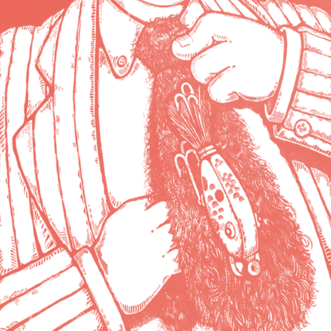

John Tyler

Tie Lure
Somebody's taken all that hair and made it into a necktie. And that tie has a fishing lure stuck to it. Of course, that's not any old lure, it's a tie lure. To help you remember he was the tenth president, think of how boys started wearing ties at age 10.